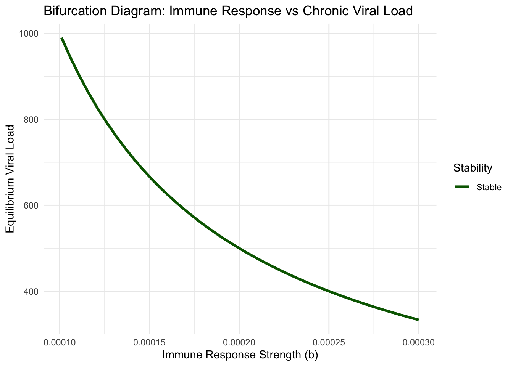

Chapter 8 Finding Balance: Equilibrium Points and Linear Stability
The emergency room operates in a delicate balance. Patients arrive seeking care while medical staff work to discharge them. When arrivals match discharges, the system reaches equilibrium—a steady state where the waiting room population remains constant. But not all equilibria are created equal. A stable equilibrium absorbs fluctuations gracefully: a sudden influx of patients gradually resolves as staff adjusts. An unstable equilibrium amplifies disturbances: minor variations spiral into overcrowding or empty waiting rooms. Understanding which type of equilibrium a system possesses, and how it responds to perturbations, forms the cornerstone of dynamical systems analysis.
In our previous exploration of two-dimensional systems, we encountered fixed points as locations where trajectories could remain forever unchanged. Now we develop the mathematical machinery to classify these equilibria and predict their stability properties. This analysis transforms our understanding from merely identifying equilibria to comprehending the complete landscape of system behavior—knowing not just where a system might rest, but whether it will actually reach that rest state and how it will approach it.
8.1 The Nature of Equilibrium
An equilibrium point, also called a fixed point or steady state, represents a configuration where the system experiences no net change. Mathematically, for a two-dimensional system described by differential equations \(\dot{x} = f(x,y)\) and \(\dot{y} = g(x,y)\), an equilibrium \((x^*, y^*)\) satisfies the simultaneous conditions \(f(x^*, y^*) = 0\) and \(g(x^*, y^*) = 0\). At such points, both time derivatives vanish—the system has no impetus to move in any direction.
Consider a simple healthcare system model tracking patient flow through a hospital ward. Let \(x\) represent the number of patients in the general ward and \(y\) represent the number in intensive care. Patients arrive to the general ward at rate \(\lambda\), transfer from general to intensive care at rate \(\alpha x\), recover from general care and leave at rate \(\beta x\), recover from intensive care at rate \(\gamma y\), and unfortunately expire from intensive care at rate \(\delta y\). This gives us the system:
\[\frac{dx}{dt} = \lambda - \alpha x - \beta x = \lambda - (\alpha + \beta)x\]
\[\frac{dy}{dt} = \alpha x - \gamma y - \delta y = \alpha x - (\gamma + \delta)y\]
To find equilibria, we set both derivatives to zero. From the first equation, \(\lambda = (\alpha + \beta)x^*\), giving \(x^* = \lambda/(\alpha + \beta)\). Substituting into the second equation, \(\alpha x^* = (\gamma + \delta)y^*\), which yields \(y^* = \alpha\lambda/((\alpha + \beta)(\gamma + \delta))\). This equilibrium represents the steady-state patient census when arrivals precisely balance departures across both units.
But knowing an equilibrium exists tells us little about whether the system will actually reach it. A marble balanced atop a hill sits at an equilibrium, as does a marble resting at the bottom of a valley. Both experience zero net force, yet their responses to small disturbances differ dramatically. The hilltop equilibrium is unstable—any perturbation sends the marble rolling away. The valley equilibrium is stable—perturbations lead to oscillations that gradually decay, returning the marble to rest.
8.2 Linear Approximation and the Jacobian Matrix
The key insight enabling equilibrium classification comes from linear approximation. Near an equilibrium point, we can approximate the nonlinear system dynamics using a linear system that captures local behavior. This approximation, called linearization, reduces the problem to analyzing a linear system whose solutions we understand completely through eigenvalue analysis.
Consider a small perturbation from equilibrium: let \(u = x - x^*\) and \(v = y - y^*\) represent small displacements from the fixed point \((x^*, y^*)\). The system dynamics for these perturbations can be approximated using Taylor expansion. For small perturbations, we keep only first-order terms:
\[\frac{du}{dt} = \frac{\partial f}{\partial x}\bigg|_{(x^*,y^*)} u + \frac{\partial f}{\partial y}\bigg|_{(x^*,y^*)} v\]
\[\frac{dv}{dt} = \frac{\partial g}{\partial x}\bigg|_{(x^*,y^*)} u + \frac{\partial g}{\partial y}\bigg|_{(x^*,y^*)} v\]
This linear system can be written compactly in matrix form as \(\dot{\mathbf{u}} = \mathbf{J}\mathbf{u}\), where \(\mathbf{u} = (u, v)^T\) is the perturbation vector and \(\mathbf{J}\) is the Jacobian matrix:
\[\mathbf{J} = \begin{pmatrix} \frac{\partial f}{\partial x} & \frac{\partial f}{\partial y} \\\\ \frac{\partial g}{\partial x} & \frac{\partial g}{\partial y} \end{pmatrix}\]
The Jacobian matrix encodes how the system responds to small displacements in each direction. The partial derivative \(\partial f/\partial x\) measures how changes in \(x\) affect the rate of change of \(x\) itself—a self-feedback term. The partial derivative \(\partial f/\partial y\) measures how changes in \(y\) influence the rate of change of \(x\)—a cross-coupling term. Together, these derivatives form a complete linear description of the system’s local dynamics.
For our hospital ward model, the Jacobian becomes:
\[\mathbf{J} = \begin{pmatrix} -(\alpha + \beta) & 0 \\\\ \alpha & -(\gamma + \delta) \end{pmatrix}\]
Notice this Jacobian is constant—independent of the equilibrium point. This simplification occurs because our model happens to be linear. For nonlinear systems, the Jacobian varies with position, and we must evaluate it specifically at each equilibrium point to understand local behavior there.
# Hospital ward patient flow model
library(ggplot2)
library(deSolve)
library(gridExtra)
# Define the system
hospital_flow <- function(t, state, parameters) {
with(as.list(c(state, parameters)), {
dx <- lambda - (alpha + beta)*x
dy <- alpha*x - (gamma + delta)*y
list(c(dx, dy))
})
}
# Set realistic parameters (rates per day)
params <- list(
lambda = 10, # 10 patients arrive per day
alpha = 0.1, # 10% of general ward patients transfer to ICU per day
beta = 0.3, # 30% of general ward patients discharge per day
gamma = 0.15, # 15% of ICU patients recover and discharge per day
delta = 0.05 # 5% mortality rate in ICU per day
)
# Calculate equilibrium
x_star <- params$lambda / (params$alpha + params$beta)
y_star <- (params$alpha * params$lambda) /
((params$alpha + params$beta) * (params$gamma + params$delta))
cat("Equilibrium point:\n")## Equilibrium point:## General ward: 25.00 patients## ICU: 12.50 patients# Calculate Jacobian at equilibrium
J <- matrix(c(
-(params$alpha + params$beta), 0,
params$alpha, -(params$gamma + params$delta)
), nrow = 2, byrow = TRUE)
cat("Jacobian matrix:\n")## Jacobian matrix:## [,1] [,2]
## [1,] -0.4 0.0
## [2,] 0.1 -0.2##
## Eigenvalues:## [1] -0.4 -0.2##
## Eigenvectors:## [,1] [,2]
## [1,] 0.8944272 0
## [2,] -0.4472136 1# Simulate trajectories from different initial conditions
times <- seq(0, 30, by = 0.1)
initial_conditions <- list(
c(x = 35, y = 8),
c(x = 20, y = 15),
c(x = 30, y = 2),
c(x = 15, y = 10)
)
trajectories <- lapply(initial_conditions, function(ic) {
solution <- ode(y = ic, times = times, func = hospital_flow, parms = params)
data.frame(solution)
})
# Plot phase portrait
plot_data <- do.call(rbind, lapply(seq_along(trajectories), function(i) {
cbind(trajectories[[i]], trajectory = i)
}))
ggplot(plot_data, aes(x = x, y = y, color = factor(trajectory))) +
geom_path(size = 0.8) +
geom_point(aes(x = x_star, y = y_star), color = "red", size = 4, shape = 19) +
geom_point(data = plot_data[plot_data$time == 0, ],
aes(x = x, y = y), size = 3, shape = 1, stroke = 1.5) +
labs(
title = "Hospital Ward Dynamics: Stable Node",
subtitle = "All trajectories converge to equilibrium",
x = "General Ward Patients",
y = "ICU Patients"
) +
theme_minimal() +
theme(legend.position = "none")## Warning in geom_point(aes(x = x_star, y = y_star), color = "red", size = 4, : All aesthetics have length 1, but the data has 1204 rows.
## ℹ Please consider using `annotate()` or provide this layer with data containing a single row.
8.3 Eigenvalue Analysis and Stability Classification
The eigenvalues of the Jacobian matrix determine equilibrium stability. An eigenvalue \(\lambda\) and its corresponding eigenvector \(\mathbf{v}\) satisfy \(\mathbf{J}\mathbf{v} = \lambda\mathbf{v}\). The eigenvector points in a special direction where the linear transformation acts by simple scaling, and the eigenvalue gives the scaling factor.
For a two-dimensional system, the characteristic equation \(\det(\mathbf{J} - \lambda\mathbf{I}) = 0\) gives a quadratic whose roots are the eigenvalues:
\[\lambda^2 - \text{tr}(\mathbf{J})\lambda + \det(\mathbf{J}) = 0\]
Solving using the quadratic formula yields:
\[\lambda_{1,2} = \frac{\text{tr}(\mathbf{J}) \pm \sqrt{\text{tr}(\mathbf{J})^2 - 4\det(\mathbf{J})}}{2}\]
The trace \(\text{tr}(\mathbf{J}) = J_{11} + J_{22}\) equals the sum of eigenvalues, while the determinant \(\det(\mathbf{J}) = J_{11}J_{22} - J_{12}J_{21}\) equals their product. These two quantities completely determine the eigenvalue structure and thus the stability properties.
When both eigenvalues have negative real parts, perturbations decay exponentially and the equilibrium is stable. When at least one eigenvalue has positive real part, perturbations grow and the equilibrium is unstable. The eigenvalue structure determines not only stability but also the geometric character of approach or departure from the equilibrium.
For our hospital model, both diagonal entries of the Jacobian are negative (patients leave both units), while the off-diagonal entry in the upper right is zero (ICU patients don’t affect general ward admissions directly). This triangular structure gives eigenvalues \(\lambda_1 = -(\alpha + \beta) = -0.4\) and \(\lambda_2 = -(\gamma + \delta) = -0.2\). Both eigenvalues are real and negative, indicating a stable node—perturbations decay monotonically without oscillation.
The eigenvector corresponding to \(\lambda_1\) is \((1, 0)^T\), pointing along the general ward axis. Perturbations in this direction decay at rate 0.4 per day. The eigenvector for \(\lambda_2\) points primarily along the ICU axis, with slower decay at rate 0.2 per day. The slower ICU dynamics reflect the more intensive nature of care there—patients take longer to recover or transition out.
8.4 The Taxonomy of Fixed Points
The eigenvalue structure creates a complete taxonomy of two-dimensional fixed points. When eigenvalues are real and distinct with the same sign, the equilibrium is a node. If both are negative, we have a stable node where all trajectories approach the fixed point monotonically. If both are positive, we have an unstable node where trajectories diverge.
When eigenvalues are real with opposite signs, one positive and one negative, the equilibrium is a saddle point. Trajectories approach along the stable direction (negative eigenvalue eigenvector) but diverge along the unstable direction (positive eigenvalue eigenvector). Saddles are always unstable—only trajectories starting exactly on the stable manifold approach the saddle.
When eigenvalues are complex conjugates \(\lambda = \sigma \pm i\omega\), the real part \(\sigma\) determines stability while the imaginary part \(\omega\) introduces oscillation. If \(\sigma < 0\), we have a stable spiral where trajectories spiral inward to the equilibrium. If \(\sigma > 0\), we have an unstable spiral where trajectories spiral outward. The special case \(\sigma = 0\) gives a center with purely imaginary eigenvalues, creating neutral stability where trajectories orbit indefinitely.
The discriminant \(\Delta = \text{tr}(\mathbf{J})^2 - 4\det(\mathbf{J})\) determines whether eigenvalues are real or complex. When \(\Delta > 0\), eigenvalues are real. When \(\Delta < 0\), eigenvalues form complex conjugate pairs. The boundary case \(\Delta = 0\) gives repeated real eigenvalues, potentially creating a degenerate node.
# Create trace-determinant phase diagram
tau_seq <- seq(-3, 3, length.out = 300)
det_seq <- seq(-1, 3, length.out = 300)
grid <- expand.grid(tau = tau_seq, det = det_seq)
# Classify fixed points based on trace and determinant
grid$type <- with(grid, {
discriminant <- tau^2 - 4*det
ifelse(det < 0, "Saddle",
ifelse(det == 0, "Boundary",
ifelse(tau^2 < 4*det & tau < 0, "Stable Spiral",
ifelse(tau^2 < 4*det & tau > 0, "Unstable Spiral",
ifelse(tau^2 > 4*det & tau < 0, "Stable Node",
ifelse(tau^2 > 4*det & tau > 0, "Unstable Node",
ifelse(abs(tau) < 0.05 & det > 0, "Center", "Boundary")))))))
})
# Create parabola boundary
parabola <- data.frame(tau = tau_seq, det = tau_seq^2/4)
ggplot(grid, aes(x = tau, y = det, fill = type)) +
geom_raster() +
geom_line(data = parabola, aes(x = tau, y = det),
color = "black", size = 1.2, inherit.aes = FALSE) +
geom_hline(yintercept = 0, size = 1.2, color = "black") +
geom_vline(xintercept = 0, linetype = "dashed", alpha = 0.5) +
annotate("text", x = -2, y = -0.6, label = "Saddle", size = 5, fontface = "bold") +
annotate("text", x = -1.8, y = 2.3, label = "Stable\nSpiral", size = 4.5, fontface = "bold") +
annotate("text", x = 1.8, y = 2.3, label = "Unstable\nSpiral", size = 4.5, fontface = "bold") +
annotate("text", x = -2, y = 0.8, label = "Stable\nNode", size = 4.5, fontface = "bold") +
annotate("text", x = 2, y = 0.8, label = "Unstable\nNode", size = 4.5, fontface = "bold") +
scale_fill_manual(values = c(
"Saddle" = "#e74c3c",
"Stable Node" = "#27ae60",
"Stable Spiral" = "#2ecc71",
"Unstable Node" = "#c0392b",
"Unstable Spiral" = "#e67e22",
"Center" = "#f39c12",
"Boundary" = "gray90"
)) +
labs(
title = "Fixed Point Classification: Trace-Determinant Plane",
subtitle = "The parabola τ² = 4Δ separates real from complex eigenvalues",
x = "Trace (τ = λ₁ + λ₂)",
y = "Determinant (Δ = λ₁λ₂)"
) +
coord_cartesian(xlim = c(-3, 3), ylim = c(-1, 3)) +
theme_minimal() +
theme(legend.position = "none",
panel.grid.minor = element_blank())
8.5 Application to Epidemic Dynamics
To illustrate the power of stability analysis, consider the SIR epidemic model tracking disease spread through a population. Let \(S\) represent susceptible individuals, \(I\) infected individuals, and \(R\) recovered individuals. The dynamics follow:
\[\frac{dS}{dt} = -\beta SI\]
\[\frac{dI}{dt} = \beta SI - \gamma I\]
Here \(\beta\) measures transmission rate and \(\gamma\) represents recovery rate. We ignore the recovered class since \(R = N - S - I\) for constant total population \(N\).
The disease-free equilibrium occurs at \((S^*, I^*) = (N, 0)\)—entire population susceptible, no infections. To analyze stability, we compute the Jacobian:
\[\mathbf{J} = \begin{pmatrix} -\beta I & -\beta S \\\\ \beta I & \beta S - \gamma \end{pmatrix}\]
At the disease-free equilibrium:
\[\mathbf{J}(N, 0) = \begin{pmatrix} 0 & -\beta N \\\\ 0 & \beta N - \gamma \end{pmatrix}\]
The eigenvalues are \(\lambda_1 = 0\) and \(\lambda_2 = \beta N - \gamma\). The zero eigenvalue reflects a conservation law—trajectories move along the manifold \(S + I + R = N\). The second eigenvalue determines disease invasion potential. When \(\beta N < \gamma\), we have \(\lambda_2 < 0\) and the disease-free state is stable—infections cannot establish. When \(\beta N > \gamma\), we have \(\lambda_2 > 0\) and disease invades successfully.
The critical threshold \(\beta N = \gamma\) defines the basic reproduction number \(R_0 = \beta N/\gamma\)—the expected number of secondary infections from one infected individual in a fully susceptible population. When \(R_0 < 1\), each infection produces less than one new infection and the disease dies out. When \(R_0 > 1\), infections cascade and an epidemic occurs.
# SIR epidemic model with stability analysis
sir_model <- function(t, state, parameters) {
with(as.list(c(state, parameters)), {
dS <- -beta * S * I
dI <- beta * S * I - gamma * I
list(c(dS, dI))
})
}
# Parameters for different epidemic scenarios
N <- 1000
params_subcritical <- list(beta = 0.0003, gamma = 0.1, N = N)
params_supercritical <- list(beta = 0.0005, gamma = 0.1, N = N)
# Calculate R0 for each case
R0_sub <- params_subcritical$beta * N / params_subcritical$gamma
R0_super <- params_supercritical$beta * N / params_supercritical$gamma
cat(sprintf("Subcritical case: R₀ = %.2f (disease dies out)\n", R0_sub))## Subcritical case: R₀ = 3.00 (disease dies out)## Supercritical case: R₀ = 5.00 (epidemic occurs)# Simulate both scenarios
simulate_sir <- function(params, I0_values = c(5, 10, 20)) {
times <- seq(0, 100, by = 0.2)
all_trajs <- lapply(seq_along(I0_values), function(i) {
initial <- c(S = params$N - I0_values[i], I = I0_values[i])
solution <- ode(y = initial, times = times, func = sir_model, parms = params)
data.frame(solution, trajectory = i, I0 = I0_values[i])
})
do.call(rbind, all_trajs)
}
traj_sub <- simulate_sir(params_subcritical)
traj_super <- simulate_sir(params_supercritical)
# Plot phase portraits with nullclines
plot_sir_phase <- function(traj_data, params, R0, title) {
# I nullcline: dI/dt = 0 => I = 0 or S = gamma/beta
S_threshold <- params$gamma / params$beta
p <- ggplot(traj_data, aes(x = S, y = I, color = factor(trajectory))) +
geom_path(size = 1) +
geom_vline(xintercept = S_threshold, linetype = "dashed",
color = "blue", size = 1, alpha = 0.7) +
geom_point(aes(x = params$N, y = 0),
color = ifelse(R0 < 1, "#27ae60", "#e74c3c"),
size = 5, shape = 19) +
geom_point(data = traj_data[traj_data$time == 0, ],
aes(x = S, y = I), size = 3, shape = 1, stroke = 1.5) +
annotate("text", x = S_threshold + 50, y = max(traj_data$I) * 0.9,
label = sprintf("S* = γ/β = %.0f", S_threshold),
color = "blue", fontface = "bold") +
labs(
title = title,
subtitle = sprintf("R₀ = %.2f | Disease-free equilibrium is %s",
R0, ifelse(R0 < 1, "stable", "unstable")),
x = "Susceptible (S)",
y = "Infected (I)"
) +
theme_minimal() +
theme(legend.position = "none")
return(p)
}
p1 <- plot_sir_phase(traj_sub, params_subcritical, R0_sub,
"Subcritical Epidemic (R₀ < 1)")
p2 <- plot_sir_phase(traj_super, params_supercritical, R0_super,
"Supercritical Epidemic (R₀ > 1)")
grid.arrange(p1, p2, ncol = 1)## Warning in geom_point(aes(x = params$N, y = 0), color = ifelse(R0 < 1, "#27ae60", : All aesthetics have length 1, but the data has 1503 rows.
## ℹ Please consider using `annotate()` or provide this layer with data containing a single row.
## All aesthetics have length 1, but the data has 1503 rows.
## ℹ Please consider using `annotate()` or provide this layer with data containing a single row.
8.6 Timescale Separation and Dominant Dynamics
The magnitude of eigenvalues reveals timescales of system response. A large negative eigenvalue corresponds to fast decay—perturbations along that eigenvector direction vanish quickly. A small negative eigenvalue indicates slow decay—perturbations persist longer. This timescale separation creates fast and slow dynamics that can be exploited for model reduction and analysis.
In our hospital model, the general ward eigenvalue \(\lambda_1 = -0.4\) indicates faster dynamics than the ICU eigenvalue \(\lambda_2 = -0.2\). Patients move through general care relatively quickly, while ICU dynamics evolve more slowly. After a transient period of roughly \(1/|\lambda_1| = 2.5\) days, general ward perturbations largely vanish and subsequent evolution is dominated by the slower ICU timescale of roughly \(1/|\lambda_2| = 5\) days.
This insight enables dimensional reduction for long-term predictions. Once fast transients decay, we can approximate the system as evolving along the slow manifold associated with the smallest eigenvalue magnitude. Such quasi-steady-state approximations appear throughout applied mathematics, from chemical kinetics to climate modeling.
8.7 Nonhyperbolic Fixed Points and Structural Stability
Our classification scheme encounters difficulties when eigenvalues have zero real part. A center with purely imaginary eigenvalues represents borderline stability—neither attracting nor repelling. Small nonlinear terms neglected in linearization can qualitatively change behavior near centers, making their stability structurally unstable.
Similarly, when \(\det(\mathbf{J}) = 0\), at least one eigenvalue vanishes, indicating degeneracy. The Jacobian becomes singular and linearization captures only partial information. Such nonhyperbolic fixed points require more sophisticated analysis techniques including center manifold theory and normal form reductions.
Hyperbolic fixed points—those with all eigenvalues having nonzero real parts—possess structural stability. Their stability properties persist under small perturbations to the system. This robustness makes hyperbolic analysis reliable for practical applications where system parameters cannot be known with perfect precision.
8.8 The Dance of Feedback: Understanding System Response
The Jacobian diagonal elements represent self-feedback: how each variable influences its own rate of change. Negative diagonal entries create stabilizing self-regulation—increases in a variable slow its own growth. Positive diagonal entries generate self-amplification—increases accelerate further growth. Off-diagonal elements encode coupling: how one variable affects the other’s dynamics.
In predator-prey systems, prey self-regulation (negative diagonal term) can stabilize oscillations into spiral equilibria. In chemical reactions, autocatalytic feedback (positive diagonal terms) can create bistability between different steady states. In neural networks, inhibitory coupling (negative off-diagonal terms) generates oscillations through delayed negative feedback.
Understanding this feedback architecture provides intuition beyond mere mathematical classification. We learn to read Jacobian matrices as maps of system interconnection, revealing which interactions stabilize, which destabilize, and which create oscillatory dynamics.
8.9 Conclusion: The Local-Global Connection
Linear stability analysis provides a powerful lens for understanding nonlinear systems near equilibria. By computing the Jacobian, calculating eigenvalues, and classifying fixed point types, we predict whether systems will settle to steady states, oscillate indefinitely, or diverge from equilibrium. This local analysis forms the foundation for global understanding.
Yet linear analysis has limits. It reveals behavior only near fixed points, saying nothing about trajectories far from equilibrium. Multiple equilibria with different stability properties can coexist, creating complex basin structures. Limit cycles—oscillatory attractors that linearization cannot predict—may dominate long-term dynamics. These global phenomena require the phase portrait techniques we develop next, but they build upon the local stability framework established here.
The marriage of local and global analysis—understanding both what happens near equilibria and how trajectories connect distant regions—unlocks the complete picture of system dynamics. Linear stability tells us where we might end up. Global analysis reveals which destinations we actually reach and the paths we take getting there.